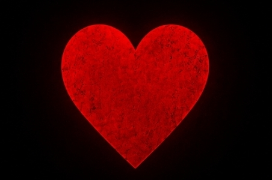
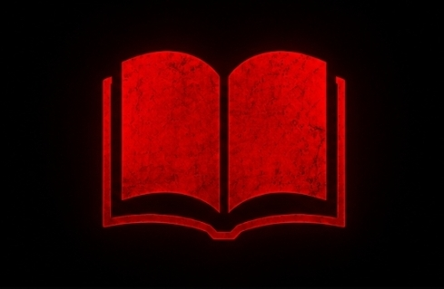
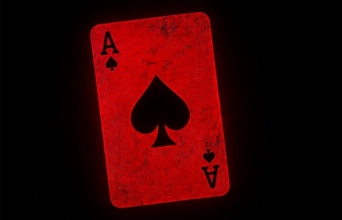
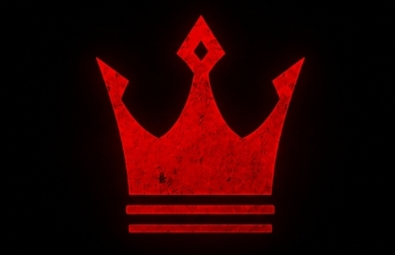

01 | Adaptação
Alice in Borderland é uma adaptação do mangá escrito por Haro Aso.
A publicação oficial ocorreu entre 2010 e 2016.
A produção televisiva, comprada pela Netflix,
foi muito fiel ao enredo original e seguiu com a mesma linha de história.

02 | O significado de "Borderland"
O nome faz um duplo sentido inteligente entre "Borderline"
(o limiar psicológico entre a vida e a morte) e "Border" (a fronteira de um novo mundo).

03 | Cartas
As cartas fora criadas especialmente para a série.
Cada naipe representa um tipo de desafio: espadas testam a força física,
paus exigem trabalho em equipe, ouros envolvem inteligência e estratégia,
e copas coloca á prova as emoções e os sentimentos dos participantes.

04 | Possível inspiração em Alice no País das Maravilhas
Se você notou alguma similaridade com a história, é bem provável que esteja certo.
Alice in Borderland foi inspirada na primeira história e o nome do protagonista é Arisu,
uma tradução para Alice.